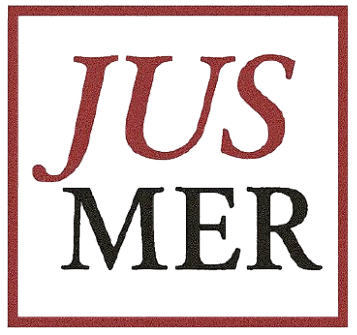
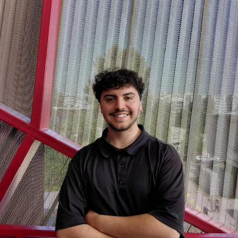

Nueva publicación en Frontiers of Sociology
Juan Carlos Castillo
René Canales
Andreas Laffert
Tomás Urzúa
René Canales
Andreas Laffert
Tomás Urzúa

El presente proyecto de investigación se enfoca en analizar las preferencias por justicia de mercado en Chile y su relación con criterios de merecimiento.
La principal hipótesis de este proyecto es que las preferencias por justicia de mercado se asocian con las percepciones de distintos criterios de merecimiento, las que tienen un fuerte trasfondo cultural.
Investigador Principal
Asistente de investigación

Tesista
Asistente de investigación